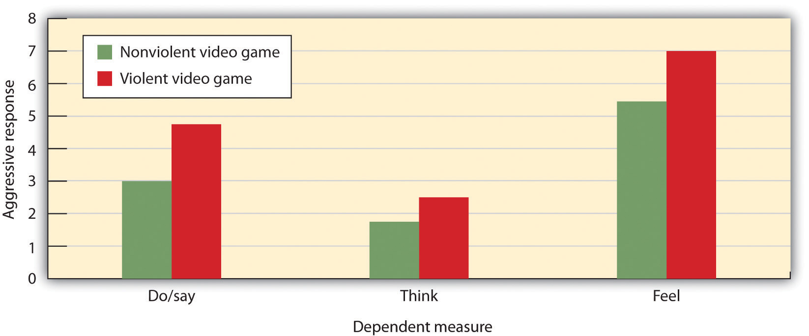

John B. Watson and B. F. Skinner were behaviorists who believed that all learning could be explained by the processes of conditioning—that is, that associations, and associations alone, influence learning. But some kinds of learning are very difficult to explain using only conditioning. Thus, although classical and operant conditioning play a key role in learning, they constitute only a part of the total picture.
One type of learning that is not determined only by conditioning occurs when we suddenly find the solution to a problem, as if the idea just popped into our head. This type of learning is known as insightThe sudden understanding of the solution to a problem., the sudden understanding of a solution to a problem. The German psychologist Wolfgang Köhler (1925)Köhler, W. (1925). The mentality of apes (E. Winter, Trans.). New York, NY: Harcourt Brace Jovanovich. carefully observed what happened when he presented chimpanzees with a problem that was not easy for them to solve, such as placing food in an area that was too high in the cage to be reached. He found that the chimps first engaged in trial-and-error attempts at solving the problem, but when these failed they seemed to stop and contemplate for a while. Then, after this period of contemplation, they would suddenly seem to know how to solve the problem, for instance by using a stick to knock the food down or by standing on a chair to reach it. Köhler argued that it was this flash of insight, not the prior trial-and-error approaches, which were so important for conditioning theories, that allowed the animals to solve the problem.
Edward Tolman (Tolman & Honzik, 1930)Tolman, E. C., & Honzik, C. H. (1930). Introduction and removal of reward, and maze performance in rats. University of California Publications in Psychology, 4, 257–275. studied the behavior of three groups of rats that were learning to navigate through mazes. The first group always received a reward of food at the end of the maze. The second group never received any reward, and the third group received a reward, but only beginning on the 11th day of the experimental period. As you might expect when considering the principles of conditioning, the rats in the first group quickly learned to negotiate the maze, while the rats of the second group seemed to wander aimlessly through it. The rats in the third group, however, although they wandered aimlessly for the first 10 days, quickly learned to navigate to the end of the maze as soon as they received food on day 11. By the next day, the rats in the third group had caught up in their learning to the rats that had been rewarded from the beginning.
It was clear to Tolman that the rats that had been allowed to experience the maze, even without any reinforcement, had nevertheless learned something, and Tolman called this latent learning. Latent learningLearning that is not reinforced and not demonstrated until there is motivation to do so. refers to learning that is not reinforced and not demonstrated until there is motivation to do so. Tolman argued that the rats had formed a “cognitive map” of the maze but did not demonstrate this knowledge until they received reinforcement.
The idea of latent learning suggests that animals, and people, may learn simply by experiencing or watching. Observational learning (modeling)Learning by observing the behavior of others. is learning by observing the behavior of others. To demonstrate the importance of observational learning in children, Bandura, Ross, and Ross (1963)Bandura, A., Ross, D., & Ross, S. A. (1963). Imitation of film-mediated aggressive models. The Journal of Abnormal and Social Psychology, 66(1), 3–11. showed children a live image of either a man or a woman interacting with a Bobo doll, a filmed version of the same events, or a cartoon version of the events. As you can see in Note 7.44 "Video Clip: Bandura Discussing Clips From His Modeling Studies" the Bobo doll is an inflatable balloon with a weight in the bottom that makes it bob back up when you knock it down. In all three conditions, the model violently punched the clown, kicked the doll, sat on it, and hit it with a hammer.
Take a moment to see how Albert Bandura explains his research into the modeling of aggression in children.
The researchers first let the children view one of the three types of modeling, and then let them play in a room in which there were some really fun toys. To create some frustration in the children, Bandura let the children play with the fun toys for only a couple of minutes before taking them away. Then Bandura gave the children a chance to play with the Bobo doll.
If you guessed that most of the children imitated the model, you would be correct. Regardless of which type of modeling the children had seen, and regardless of the sex of the model or the child, the children who had seen the model behaved aggressively—just as the model had done. They also punched, kicked, sat on the doll, and hit it with the hammer. Bandura and his colleagues had demonstrated that these children had learned new behaviors, simply by observing and imitating others.
Observational learning is useful for animals and for people because it allows us to learn without having to actually engage in what might be a risky behavior. Monkeys that see other monkeys respond with fear to the sight of a snake learn to fear the snake themselves, even if they have been raised in a laboratory and have never actually seen a snake (Cook & Mineka, 1990).Cook, M., & Mineka, S. (1990). Selective associations in the observational conditioning of fear in rhesus monkeys. Journal of Experimental Psychology: Animal Behavior Processes, 16(4), 372–389. As Bandura put it,
the prospects for [human] survival would be slim indeed if one could learn only by suffering the consequences of trial and error. For this reason, one does not teach children to swim, adolescents to drive automobiles, and novice medical students to perform surgery by having them discover the appropriate behavior through the consequences of their successes and failures. The more costly and hazardous the possible mistakes, the heavier is the reliance on observational learning from competent learners. (Bandura, 1977, p. 212)Bandura, A. (1977). Self-efficacy: Toward a unifying theory of behavior change. Psychological Review, 84, 191–215.
Although modeling is normally adaptive, it can be problematic for children who grow up in violent families. These children are not only the victims of aggression, but they also see it happening to their parents and siblings. Because children learn how to be parents in large part by modeling the actions of their own parents, it is no surprise that there is a strong correlation between family violence in childhood and violence as an adult. Children who witness their parents being violent or who are themselves abused are more likely as adults to inflict abuse on intimate partners or their children, and to be victims of intimate violence (Heyman & Slep, 2002).Heyman, R. E., & Slep, A. M. S. (2002). Do child abuse and interparental violence lead to adulthood family violence? Journal of Marriage and Family, 64(4), 864–870. In turn, their children are more likely to interact violently with each other and to aggress against their parents (Patterson, Dishion, & Bank, 1984).Patterson, G. R., Dishion, T. J., & Bank, L. (1984). Family interaction: A process model of deviancy training. Aggressive Behavior, 10(3), 253–267.
The average American child watches more than 4 hours of television every day, and 2 out of 3 of the programs they watch contain aggression. It has been estimated that by the age of 12, the average American child has seen more than 8,000 murders and 100,000 acts of violence. At the same time, children are also exposed to violence in movies, video games, and virtual reality games, as well as in music videos that include violent lyrics and imagery (The Henry J. Kaiser Family Foundation, 2003; Schulenburg, 2007; Coyne & Archer, 2005).The Henry J. Kaiser Family Foundation. (2003, Spring). Key facts. Menlo Park, CA: Author. Retrieved from http://www.kff.org/entmedia/upload/Key-Facts-TV-Violence.pdf; Schulenburg, C. (2007, January). Dying to entertain: Violence on prime time broadcast television, 1998 to 2006. Los Angeles, CA: Parents Television Council. Retrieved from http://www.parentstv.org/PTC/publications/reports/violencestudy/exsummary.asp; Coyne, S. M., & Archer, J. (2005). The relationship between indirect and physical aggression on television and in real life. Social Development, 14(2), 324–337.
It might not surprise you to hear that these exposures to violence have an effect on aggressive behavior. The evidence is impressive and clear: The more media violence people, including children, view, the more aggressive they are likely to be (Anderson et al., 2003; Cantor et al., 2001).Anderson, C. A., Berkowitz, L., Donnerstein, E., Huesmann, L. R., Johnson, J. D., Linz, D.,…Wartella, E. (2003). The influence of media violence on youth. Psychological Science in the Public Interest, 4(3), 81–110; Cantor, J., Bushman, B. J., Huesmann, L. R., Groebel, J., Malamuth, N. M., Impett, E. A.,…Singer, J. L. (Eds.). (2001). Some hazards of television viewing: Fears, aggression, and sexual attitudes. Thousand Oaks, CA: Sage. The relation between viewing television violence and aggressive behavior is about as strong as the relation between smoking and cancer or between studying and academic grades. People who watch more violence become more aggressive than those who watch less violence.
It is clear that watching television violence can increase aggression, but what about violent video games? These games are more popular than ever, and also more graphically violent. Youths spend countless hours playing these games, many of which involve engaging in extremely violent behaviors. The games often require the player to take the role of a violent person, to identify with the character, to select victims, and of course to kill the victims. These behaviors are reinforced by winning points and moving on to higher levels, and are repeated over and over.
Again, the answer is clear—playing violent video games leads to aggression. A recent meta-analysis by Anderson and Bushman (2001)Anderson, C. A., & Bushman, B. J. (2001). Effects of violent video games on aggressive behavior, aggressive cognition, aggressive affect, physiological arousal, and prosocial behavior: A meta-analytic review of the scientific literature. Psychological Science, 12(5), 353–359. reviewed 35 research studies that had tested the effects of playing violent video games on aggression. The studies included both experimental and correlational studies, with both male and female participants in both laboratory and field settings. They found that exposure to violent video games is significantly linked to increases in aggressive thoughts, aggressive feelings, psychological arousal (including blood pressure and heart rate), as well as aggressive behavior. Furthermore, playing more video games was found to relate to less altruistic behavior.
In one experiment, Bushman and Anderson (2002)Bushman, B. J., & Anderson, C. A. (2002). Violent video games and hostile expectations: A test of the general aggression model. Personality and Social Psychology Bulletin, 28(12), 1679–1686. assessed the effects of viewing violent video games on aggressive thoughts and behavior. Participants were randomly assigned to play either a violent or a nonviolent video game for 20 minutes. Each participant played one of four violent video games (Carmageddon, Duke Nukem, Mortal Kombat, or Future Cop) or one of four nonviolent video games (Glider Pro, 3D Pinball, Austin Powers, or Tetra Madness).
Participants then read a story, for instance this one about Todd, and were asked to list 20 thoughts, feelings, and actions about how they would respond if they were Todd:
Todd was on his way home from work one evening when he had to brake quickly for a yellow light. The person in the car behind him must have thought Todd was going to run the light because he crashed into the back of Todd’s car, causing a lot of damage to both vehicles. Fortunately, there were no injuries. Todd got out of his car and surveyed the damage. He then walked over to the other car.
As you can see in Figure 7.9 "Results From Bushman and Anderson, 2002", the students who had played one of the violent video games responded much more aggressively to the story than did those who played the nonviolent games. In fact, their responses were often extremely aggressive. They said things like “Call the guy an idiot,” “Kick the other driver’s car,” “This guy’s dead meat!” and “What a dumbass!”
Figure 7.9 Results From Bushman and Anderson, 2002
Anderson and Bushman (2002) found that college students who had just played a violent video game expressed significantly more violent responses to a story than did those who had just played a nonviolent video game.
Source: Adapted from Bushman, B. J., & Anderson, C. A. (2002). Violent video games and hostile expectations: A test of the general aggression model. Personality and Social Psychology Bulletin, 28(12), 1679–1686.
However, although modeling can increase violence, it can also have positive effects. Research has found that, just as children learn to be aggressive through observational learning, they can also learn to be altruistic in the same way (Seymour, Yoshida, & Dolan, 2009).Seymour, B., Yoshida W., & Dolan, R. (2009) Altruistic learning. Frontiers in Behavioral Neuroscience, 3, 23. doi:10.3389/neuro.07.023.2009